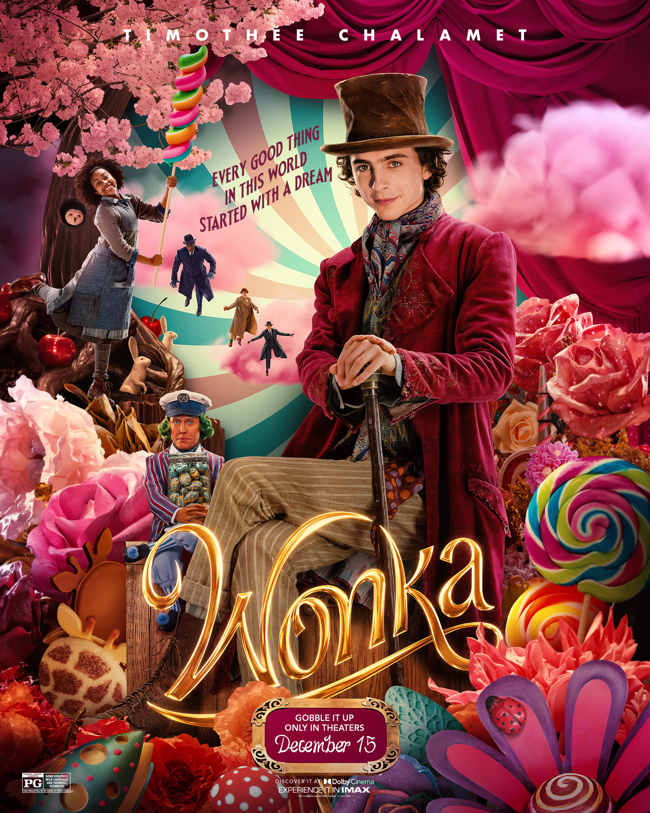

映画『ウォンカとチョコレート工場のはじまり』の紹介
一言で表すと...
ウィリー・ウォンカの若き日の冒険を描く『チョコ』×『魔法』×『映像』が融合した映画作品です！

Youtube動画紹介
Youtubeにアップされている動画です
個人的に好きな理由3選！！
-
制作がHarry Potterを手掛けたプロデューサー
魔法のようなチョコレートをテーマにした映像作品ですが、"見ている私"にも何度も魔法をかけてくれました！
-
主人公の吹き替えが花村想太（Da-iCE）さん
歌手の歌声と表現力につい引き込まれました！
-
『チャーリーとチョコレート工場』の秘密
チャーリー・バケットと若きウィリー・ウォンカが私には重なって見えました！